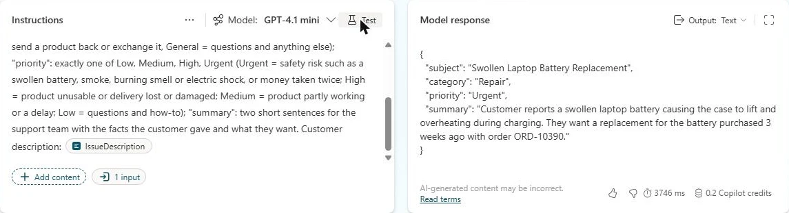

- Technical specification
- Vink Customer Care Agent · Part 7 of 9
7 · Build guide
This is the order to rebuild the solution from an empty environment. Each step ends with a checkpoint: something you can see that proves the step worked before you build on it. The fastest route is to import CustomerCareAgent_1_0_0_1.zip from the repository; the steps below are for building it yourself.
Prerequisites
| Need | Why |
|---|---|
| A developer or sandbox environment with Dataverse | Tables, flows and the agent live there |
| Copilot Studio and Power Automate access | Agent, agent flows, prompts |
| An Outlook mailbox for the connection | Customer and support emails |
A solution and publisher (prefix vin) | Everything is created inside the solution from step 1 |
Step 1: Solution, publisher, environment variables
- Create publisher Vink with prefix
vin, then solution Customer Care Agent. - Add environment variables
vin_CCSupportMailbox(text) andvin_CCCustomerEmailOverride(text, empty in production). - Add connection references Customer Care – Dataverse and Customer Care – Office 365 Outlook.
CheckpointBoth variables and both connection references show in the solution.
Step 2: Tables and columns
- Create the six custom tables and add the three Contact columns exactly as in the data model.
- Autonumbers:
TKT-{SEQNUM:4}on Service Ticket,CUST-{SEQNUM:4}on Contact. - Choices with the listed values, so flows can use the numbers (Open = 949870000…).
- Add the lookups (Service Ticket → Contact, Order, Support Team, Warranty Claim; Ticket Update → Service Ticket).
CheckpointAdd a test ticket by hand: it gets a TKT number and its lookups resolve.

Step 3: Sample data
- Add Support Teams Repairs, Billing, Logistics with team emails.
- Add products with
vin_warrantymonths. - Add a demo customer (Contact) and orders with serial numbers.
CheckpointThe customer has orders and the orders have products.
Step 4: Background flows
- Build Ticket Created (Dataverse Added, Service Tickets) with Try/Catch, the SLA Compose and the timeline row.
- Build Ticket Status Changed (Modified, Select columns
vin_ticketstatus). - Build Daily SLA Check (Recurrence daily 03:00 UTC).
CheckpointCreate a ticket by hand: a Ticket created Ticket Update row appears within seconds.

Step 5: Agent and instructions
- Create the agent in the solution, paste the instructions from Agent configuration.
- Turn web search off; add the three knowledge sources; add the three regex entities.
CheckpointAsk How long is the laptop warranty? in the test chat: a cited answer from the policy.

Step 6: Agent flows (tools)
- Create each flow in Agent flows with the exact input names and output names.
- Start with Find Customer and Register Customer, then List Orders/Tickets, Create Ticket, Get Ticket Details, Add Reply, Escalate, Record CSAT, RMA Process, Repair Update.
- Publish each flow; add it to the agent as a tool with the description from the spec.
CheckpointUse each flow's Test with sample inputs: Respond returns every output.

Step 7: Prompts
- Create Ticket Triage and Fault Summary for Technicians with the text in Agent configuration.
- Test each in the prompt editor.
CheckpointTriage returns JSON with the four keys.

Step 8: Topics
- Build Identify Customer first and set the globals.
- Build the other topics, each starting with the guard.
- Bind every flow input and every output; run Topic checker until it shows no errors.
CheckpointTopic checker: 0 errors on every topic.

Step 9: Child agent and event trigger
- Add the Billing Agent child with its description and instructions.
- Add the event trigger Warehouse scan received (Dataverse, filter
vin_ticketstatus eq 949870002).
CheckpointSet a ticket to Scanned at warehouse: the agent's Activity shows an autonomous run calling Repair Update.

Step 10: Care Hub app and publish
- Create the model-driven app with the areas in Care Hub.
- Publish all customisations; publish the agent.
CheckpointRun the eight scenarios in Test results.